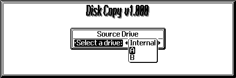
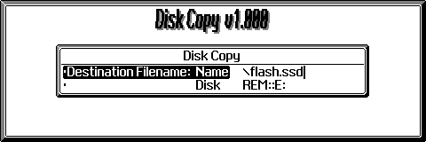
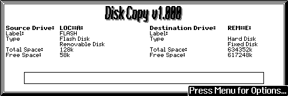
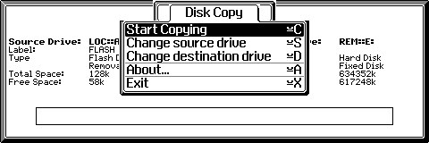
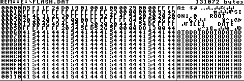

Disk Copy is very easy to use, but here is a basic outline of what you need to do. Note: Depending on your contrast setting, the screen probably won't be as dark as it appears in the pictures below.


Pressing Escape at this point will return you to step 1.
To access remote drives, you must edit the PSIONPRC.INI file in your Windows directory and remove the -X from the second line so it reads:
ENGINE=PRCENWIN.EXE
If all goes well, you should see a screen similar to this:


Choose the first one to start copying.
You can now close Disk Copy (Psion+X) and view the created file.
I recommend viewing it in a text editor such as Microsoft Word Pad if you are trying to retrive a text file. If you want to retrive a binary file, you should use a hex editor. The best hex editor for the Psion is HexView by Konstantin Saily.
